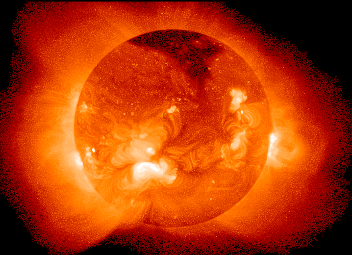
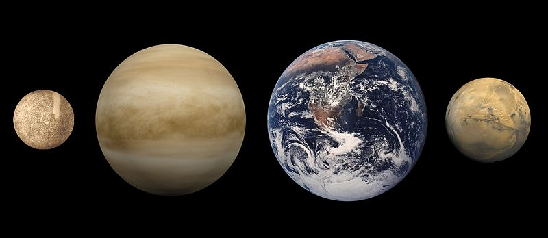
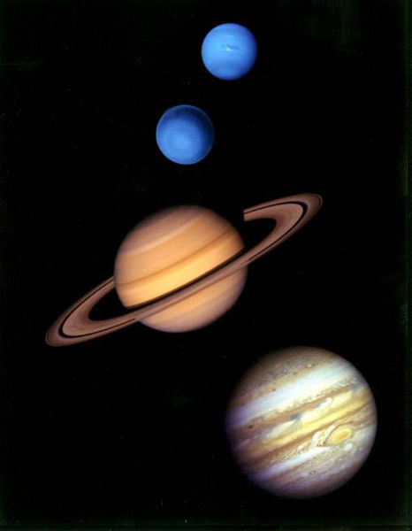

Solar system
ระบบสุริยะ (Solar System) ประกอบด้วยดวงอาทิตย์และวัตถุอื่นๆ ที่โคจรรอบดวงอาทิตย์เนื่องจากแรงโน้มถ่วง ได้แก่ ดาวเคราะห์ 8 ดวงกับดวงจันทร์บริวารที่ค้นพบแล้ว 166 ดวง ดาวเคราะห์แคระ 5 ดวงกับดวงจันทร์ บริวารที่ค้นพบแล้ว 4 ดวง กับวัตถุขนาดเล็กอื่นๆ อีกนับล้านชิ้น ซึ่งรวมถึงดาวเคราะห์น้อย วัตถุในแถบไคเปอร์ ดาวหาง สะเก็ดดาว และฝุ่นระหว่างดาวเคราะห์
โดยทั่วไปแล้วจะแบ่งย่านต่างๆ ของระบบสุริยะ นับจากดวงอาทิตย์ออกมาดังนี้คือ ดาวเคราะห์ชั้นในจำนวน 4 ดวง แถบดาว เคราะห์น้อย ดาวเคราะห์ขนาดใหญ่รอบนอกจำนวน 4 ดวง และแถบไคเปอร์ซึ่งประกอบด้วยวัตถุที่เย็นจัดเป็นน้ำแข็ง พ้นจากแถบไคเปอร์ ออกไปเป็นเขตแถบจานกระจาย ขอบเขตเฮลิโอพอส (เขตแดนตามทฤษฎีที่ซึ่งลมสุริยะสิ้นกำลังลงเนื่องจากมวลสารระหว่างดวงดาว) และพ้นไปจากนั้นคือย่านของเมฆออร์ต
กระแสพลาสมาที่ไหลออกจากดวงอาทิตย์ (หรือลมสุริยะ) จะแผ่ตัวไปทั่วระบบสุริยะ สร้างโพรงขนาดใหญ่ขึ้นในสสารระหว่าง ดาวเรียกกันว่า เฮลิโอสเฟียร์ ซึ่งขยายออกไปจากใจกลางของแถบจานกระจาย
ดาวเคราะห์ชั้นเอกทั้ง 8 ดวงในระบบสุริยะ เรียงลำดับจากใกล้ดวงอาทิตย์ที่สุดออกไป มีดังนี้คือ ดาวพุธ ดาวศุกร์ โลก ดาวอังคาร ดาวพฤหัสบดี ดาวเสาร์ ดาวยูเรนัส และดาวเนปจูน
นับถึงกลางปี ค.ศ. 2008 วัตถุขนาดย่อมกว่าดาวเคราะห์จำนวน 5 ดวง ได้รับการจัดระดับให้เป็นดาวเคราะห์แคระ ได้แก่ ซีรีส ในแถบ ดาวเคราะห์น้อย กับวัตถุอีก 4 ดวงที่โคจรรอบดวงอาทิตย์อยู่ในย่านพ้นดาวเนปจูน คือ ดาวพลูโต (ซึ่งเดิมเคยถูกจัดระดับ ไว้เป็นดาว เคราะห์) เฮาเมอา มาคีมาคี และ อีรีส
สำหรับคำว่า ระบบดาวเคราะห์ ใช้เมื่อกล่าวถึงระบบดาวโดยทั่วไปที่มีวัตถุต่างๆ โคจรรอบดาวฤกษ์ คำว่า "ระบบสุริยะ" ควรใช้ เฉพาะกับระบบดาวเคราะห์ที่มีโลกเป็นสมาชิก และไม่ควรเรียกว่า "ระบบสุริยจักรวาล" อย่างที่เรียกกันติดปาก เนื่องจาก ไม่เกี่ยวข้องกับ คำว่า "จักรวาล" ตามนัยที่ใช้ในปัจจุบัน
อายุ 4.568 พันล้านปี
ที่ตั้ง เมฆดวงดาวท้องถิ่น, ฟองท้องถิ่น, แขนของเทพนิยาย, ทางช้างเผือก
มวลของระบบ 1.0014 มวลสุริยะ
ดวงดาวที่ใกล้ที่สุด ระบบพร็อกซิมาคนครึ่งม้า (4.22 ปีแสง), ระบบอัลฟาคนครึ่งม้า (4.37 ปีแสง)
ระบบดาวเคราะห์ที่ใกล้ที่สุดที่รู้จักกัน ระบบอัลฟาคนครึ่งม้า (4.37 ปีแสง)
ระบบดาวเคราะห์ กึ่งแกนหลักของเปลือกนอก ดาวเคราะห์ (เนปจูน) 4.503 พันล้านกิโลเมตร (30.10 AU)
ระยะห่างจากแถบไคเปอร์หน้าผา 50 AU
จำนวนดาว 1 ดวง ดวงอาทิตย์
จำนวนดาวเคราะห์ 8 ดวง ดาวพุธ, ดาวศุกร์, โลก, ดาวอังคาร,ดาวพฤหัสบดี, ดาวเสาร์, ดาวยูเรนัส,ดาวเนปจูน
จำนวนดาวเคราะห์แคระที่รู้จักกัน 5 (IAU) ซีรีส, ดาวพลูโต, เฮาเมอา, มาคีมาคี,อีริส และหลายร้อยดวงอื่น ๆ
จำนวนบริวารที่รู้จักกัน 406 ดวง (176 ของดาวเคราะห์ และ 230 ของดาวเคราะห์น้อย)
จำนวนดาวเคราะห์น้อยที่รู้จักกัน 603,057 ดวง (จากข้อมูลเมื่อ 2013-01-10)
จำนวนดาวหางที่รู้จักกัน 3,184 ดวง (จากข้อมูลเมื่อ 2013-01-10)
จำนวนดาวเทียมรอบที่ระบุ 19 ดวง
วงโคจรเกี่ยวกับศูนย์กลางดาราจักร Inclination ofinvariable plane to thegalactic plane 60.19° (ecliptic)
ระยะทางไปยังศูนย์กลางทางช้างเผือก 27,000±1,000 ปีแสง
ความเร็วโคจร 220 กิโลเมตรต่อวินาที
ระยะเวลาการโคจร 225–250 ล้านปี
คุณสมบัติระดับที่เกี่ยวข้อง ชนิดสเปกตรัม G2V
แถวน้ำแข็ง ≈5 AU
Distance to heliopause ≈120 AU
รัศมีทรงกลมเนินเขา ≈1–2 ปีแสง
ประวัติการค้นพบและการสำรวจ

ดวงอาทิตย์ คือดาวฤกษ์ดวงแม่ที่เป็นหัวใจของระบบสุริยะ มีขนาดประมาณ 332,830 เท่าของมวลของโลก ด้วยปริมาณมวล ที่มีอยู่มหาศาลทำให้ดวงอาทิตย์มีความหนาแน่นภายในที่สูงมากพอจะ ทำให้เกิดปฏิกิริยานิวเคลียร์ฟิวชันอย่างต่อเนื่อง และปลดปล่อย พลังงานมหาศาลออกมา โดยมากเป็นพลังงานที่แผ่ออกไป ในลักษณะของคลื่นแม่เหล็กไฟฟ้า เช่น แสง
ดวงอาทิตย์จัดเป็นดาวฤกษ์ชนิดดารากร 1 ถือกำเนิดขึ้นในช่วงปลายๆ ของวิวัฒนาการของเอกภพ มีองค์ประกอบธาตุหนัก ที่หนักกว่าไฮโดรเจนและฮีเลียม (ในภาษาดาราศาสตร์จะเรียกว่า "โลหะ") มากกว่าดาวฤกษ์ชนิดดารากร 2 ซึ่งมีอายุมากกว่าธาตุหนัก เหล่านี้ก่อกำเนิดขึ้นจากแก่นกลางของดาวฤกษ์โบราณที่ระเบิดออก ดังนั้นดาวฤกษ์ในยุคแรกเริ่มจึงต้องแตกดับไปเสียก่อนจึงจะทำให้เอก ภพเต็มไปด้วยอะตอมธาตุเหล่านี้ได้ ดาวฤกษ์ที่มีอายุเก่าแก่มากๆ จะไม่ค่อยมีองค์ประกอบโลหะมากนัก ขณะที่ดาวฤกษ์ที่เกิดในยุคหลัง จะมีโลหะมากกว่า สันนิษฐานว่า การมีองค์ประกอบโลหะจำนวนมากนี้น่าจะ เป็นสาเหตุสำคัญที่ทำให้ดวงอาทิตย์สามารถสร้างระบบดาว เคราะห์ของตัวเองขึ้นมาได้ เพราะดาวเคราะห์ก่อตัวขึ้นมาจากการรวมตัวกันของธาตุหนักเหล่านั้น
ระบบสุริยะชั้นใน
ระบบสุริยะชั้นใน เป็นชื่อดั้งเดิมของย่านอวกาศที่ประกอบด้วยกลุ่มดาวเคราะห์ใกล้โลกและแถบดาวเคราะห์น้อย มีส่วนประกอบ หลักเป็นซิลิเกตกับโลหะ เทหวัตถุในระบบสุริยะชั้นในจะเกาะกลุ่มอยู่ด้วยกันและใกล้กับดวงอาทิตย์มาก รัศมีของย่านระบบสุริยะชั้น ในนี้ยังสั้นกว่าระยะห่างจากดาวพฤหัสบดีไปดาวเสาร์เสียอีก
ดาวเคราะห์ชั้นใน

ดาวเคราะห์ชั้นในหรือดาวเคราะห์ใกล้โลก มี 4 ดวง โดยมากประกอบด้วยส่วนประกอบหิน มีความหนาแน่นสูง มีดวงจันทร์น้อย หรืออาจ ไม่มีเลย และไม่มีระบบวงแหวนรอบตัวเอง สสารที่เป็นองค์ประกอบมักเป็นแร่ธาตุที่มีจุดหลอมเหลวสูง เช่นซิลิเกตที่ชั้นเปลือก และผิว หรือโลหะ เหล็ก นิเกิล ที่เป็นแกนกลางของดาว สามในสี่ของดาวเคราะห์กลุ่มนี้ (ดาวศุกร์ โลก และดาวอังคาร) มีชั้นบรรยากาศ ที่เห็นได้ชัด พื้นผิวมีร่องรอยของหลุมบ่อที่เกิดจากการปะทะโดยชิ้นส่วนจากอวกาศ และมีความเปลี่ยนแปลงทางธรณีวิทยาที่พื้นผิว ด้วยเช่น การแยกตัวของร่องหุบเขาและภูเขาไฟ
ดาวพุธ (0.4 AU) คือดาวเคราะห์ที่อยู่ใกล้ดวงอาทิตย์มากที่สุด และเป็นดาวเคราะห์ที่มีขนาดเล็กที่สุด (0.055 เท่าของมวลโลก) ดาวพุธไม่มีดาวบริวารของตัวเอง สภาพพื้นผิวที่มีนอกเหนือจากหลุมบ่อจากการปะทะ ก็จะเป็นสันเขาสูงชัน ซึ่งอาจจะเกิดขึ้น ในช่วงยุคการก่อตัวในช่วงเริ่มแรกของประวัติศาสตร์ ชั้นบรรยากาศของดาวพุธเบาบางมากจนแทบจะเรียกได้ว่า ไม่มีบรรยากาศ ประกอบด้วยอะตอมที่ถูกลมสุริยะพัดพาขับไล่ไปจนเกือบหมด แกนกลางของดาวเป็นเหล็กที่มีขนาดค่อนข้างใหญ่มาก ต่อมาเป็น ชั้นเปลือกบางๆ ที่ยังไม่สามารถอธิบายได้อย่างชัดเจน ทฤษฎีเกี่ยวกับชั้นเปลือกของดาวจำนวน หนึ่งอธิบายถึงชั้นผิวรอบนอก ที่ถูกฉีกออกด้วยการปะทะครั้งใหญ่ บ้างก็ว่ามันถูกกีดกันจากการพอกรวมของชั้นผิวเนื่องจากพลัง งานมหาศาล ของดวงอาทิตย์ อันเยาว์
ดาวศุกร์ (0.7 AU) มีขนาดใกล้เคียงกับโลก (0.815 เท่าของมวลโลก) และมีลักษณะคล้ายโลกมาก มีชั้นเปลือกซิลิเกตอย่างหนา ปกคลุมรอบแกนกลางของดาวซึ่งเป็นเหล็ก มีชั้นบรรยากาศ และมีหลักฐานแสดงถึงความ เปลี่ยนแปลงทางธรณีวิทยาภายในของ ดาว ทว่าดาวศุกร์แห้งแล้งกว่าโลกมาก ชั้นบรรยากาศของมันก็หนาแน่นกว่า โลกถึงกว่า 90 เท่า ดาวศุกร์ไม่มีดาวบริวารของตัวเอง กล่าวได้ว่า ดาวศุกร์เป็นดาวเคราะห์ที่ร้อนที่สุด ด้วยอุณหภูมิพื้นผิวสูงถึงกว่า 400 °C ซึ่งเป็นผลจากปริมาณแก๊สเรือนกระจกที่มีอยู่ เป็นจำนวน มากในชั้นบรรยากาศ ในปัจจุบันไม่มีการตรวจพบการเปลี่ยนแปลง ทางธรณีวิทยาใหม่ๆ บนดาวศุกร์อีกแล้ว แต่ดาวศุกร์ไม่มีสนามแม่เหล็กของตัวเองที่จะช่วยป้องกันการสูญเสียชั้นบรรยากาศ ดังนั้นการที่ดาวศุกร์ยังรักษาชั้นบรรยากาศของ ตัวเองไว้ได้จึงคาดว่าน่าจะเกิดจากการระเบิดของภูเขาไฟ
โลก (1 AU) เป็นดาวเคราะห์ที่ค่อนข้างใหญ่และมีความหนาแน่นมากที่สุดในกลุ่มดาวเคราะห์ชั้นใน เป็นดาวเคราะห์เพียง ดวงเดียวที่พบว่ายังมีปรากฏการณ์ทางธรณีวิทยาอยู่ และเป็นดาวเคราะห์เพียงดวงเดียว เท่าที่ทราบว่ามีสิ่งมีชีวิต โลกเป็นดาวเคราะห์ ที่มีน้ำมาก เป็นเอกลักษณ์ที่แตกต่างจากกลุ่มดาวเคราะห์ใกล้โลกทั้งหมด และยังเป็นดาวเคราะห์เพียงดวงเดียวที่ยังมีการเปลี่ยน แปลงของเปลือกโลกอยู่ ชั้นบรรยากาศของโลกค่อนข้างจะแตกต่างกับดาวเคราะห์ดวงอื่น เนื่องจากการที่มีสิ่งมีชีวิตอาศัยอยู่ ในบรรยา กาศจึงมีออกซิเจนอิสระอยู่ถึง 21% โลกมีดาวเคราะห์บริวารหนึ่งดวง คือ ดวงจันทร์ ซึ่งเป็นดาวเคราะห์บริวารขนาด ใหญ่เพียงดวงเดียวในเขตระบบสุริยะชั้นใน
ดาวอังคาร (1.5 AU) มีขนาดเล็กกว่าโลกและดาวศุกร์ (0.107 เท่าของมวลโลก) มีชั้นบรรยากาศเจือจางที่เต็มไปด้วยคาร์บอน ไดออกไซด์ พื้นผิวของดาวอังคารระเกะระกะด้วยภูเขาไฟจำนวนมาก เช่น Olympus Mons และหุบเขาลึกชันมากมายเช่น Valles Marineris แสดงให้เห็นถึงการเปลี่ยนแปลงทางธรณีวิทยาที่เคยเกิดขึ้นก่อนหน้านี้ สีของดาวอังคารที่เราเห็นเป็นสีแดง เป็นเพราะ สนิม ที่มีอยู่ในพื้นดินอันเต็มไปด้วยเหล็ก ดาวอังคารมีดวงจันทร์บริวารขนาดเล็กสองดวง (คือ ไดมอส กับ โฟบอส) ซึ่งคาดว่าน่าจะ เป็นดาวเคราะห์น้อยที่บังเอิญถูกแรงดึงดูดของดาวอังคารจับตัวเอาไว้
ดาวเคราะห์ชั้นนอก

ดาวเคราะห์ชั้นนอก 4 ดวง หรือดาวแก๊สยักษ์ (บางครั้งเรียกว่า ดาวเคราะห์โจเวียน) มีมวลรวมกันถึงกว่า 99% ของมวลสารทั้งหมดที่ โคจรรอบดวงอาทิตย์ ดาวพฤหัสบดีกับดาวเสาร์มีองค์ประกอบเต็มไปด้วย ไฮโดรเจนและฮีเลียม ดาวยูเรนัสกับดาวเนปจูนมีองค์ประกอบ ส่วนใหญ่เป็นน้ำแข็ง นักดาราศาสตร์จำนวนหนึ่งเห็นว่าดาวสองดวงหลังนี้ควรจัดเป็นประเภทเฉพาะของมันเอง คือ"ดาวน้ำแข็งยักษ์" ดาวแก๊สยักษ์ทั้งสี่มีวงแหวนอยู่รอบตัว แม้เมื่อมองจากโลกจะเห็นได้ชัดแต่เพียงวงแหวนของดาวเสาร์เท่านั้น
ดาวพฤหัสบดี (5.2 AU) มีมวลประมาณ 318 เท่าของมวลโลก นับเป็นมวลมหาศาลถึง 2.5 เท่าของมวลรวมทั้งหมดของดาว เคราะห์ที่เหลือรวมกัน ประกอบด้วยก๊าซไฮโดรเจนและฮีเลียมจำนวนมาก ความร้อนที่สูงมากภายในของดาวทำให้เกิดคุณลักษณะ แบบกึ่งถาวรหลายประการในสภาพบรรยากาศของดาว เช่นแถบเมฆ และจุดแดงใหญ่ ดาวพฤหัสบดีมีดวง จันทร์บริวารที่รู้จัก แล้วทั้งสิ้น 63 ดวง ดวงที่ใหญ่ที่สุด 4 ดวงคือ แกนิมีด คัลลิสโต ไอโอ และยูโรปา มีลักษณะคล้ายคลึงกับลักษณะของดาวเคราะห์ ใกล้โลก เช่นมีภูเขาไฟ และมีกระบวนการความร้อนภายในของดาว ดวงจันทร์แกนิมีดเป็นดาวบริวารที่ใหญ่ที่สุดในระบบสุริยะ มีขนาด ใหญ่กว่าดาวพุธเสียอีก
ดาวเสาร์ (9.5 AU) เป็นดาวเคราะห์ที่โดดเด่นเนื่องจากระบบวงแหวนขนาดใหญ่ที่เห็นได้ชัด ลักษณะของดาวรวมถึงสภาพ บรรยากาศ คล้ายคลึงกับดาวพฤหัสบดี แต่มีมวลน้อยกว่ามาก โดยมีมวลโดยประมาณ 95 เท่าของมวลโลก ดาวเสาร์มีดวงจันทร์ บริวารที่รู้จักแล้ว 60 ดวง (มีอีก 3 ดวงยังไม่ได้รับการรับรอง) ในจำนวนดวงจันทร์ทั้งหมดมีอยู่ 2 ดวงคือ ไททันและเอนเซลาดัส แสดงให้เห็นสัญญาณของการเปลี่ยนแปลงทางธรณีวิทยา แม้ว่าองค์ประกอบส่วนใหญ่จะเป็นน้ำแข็งก็ตาม ดวงจันทร์ไททัน มีขนาดใหญ่กว่าดาวพุธ และเป็นดวงจันทร์บริวาร เพียงดวงเดียวในระบบสุริยะที่มีชั้นบรรยากาศ
ดาวยูเรนัส (19.6 AU) มีขนาดประมาณ 14 เท่าของมวลโลก เป็นดาวเคราะห์มวลน้อยที่สุด ในระบบสุริยะชั้นนอก ลักษณะ การโคจรของดาวยูเรนัสไม่เหมือนดาวเคราะห์ดวงอื่น มันจะโคจรรอบดวงอาทิตย์แบบตะแคงข้าง โดยมีความเอียงของแกนมากกว่า 90 องศาเมื่อเทียบกับระนาบสุริยวิถี แกนกลางของดาวค่อนข้างเย็นกว่าดาวแก๊สยักษ์ดวงอื่นๆ และแผ่ความร้อนออกมาสู่อวกาศ ภายนอกเพียงน้อยนิด ดาวยูเรนัสมีดวงจันทร์บริวารที่รู้จักแล้ว 27 ดวง กลุ่มของดวงจันทร์ขนาดใหญ่ ได้แก่ ไททาเนีย โอบิรอน อัมเบรียล เอเรียล และมิรันดา
ดาวเนปจูน (30 AU) แม้จะมีขนาดเล็กกว่าดาวยูเรนัส แต่มีมวลมากกว่า คือประมาณ 17 เท่าของมวลโลก ดังนั้นมันจึงเป็น ดาวที่มีความหนาแน่นมาก ดาวเนปจูนแผ่รังสีความร้อนจากแกนกลางออกมามาก แต่ก็ยังน้อยกว่าดาวพฤหัสบดีหรือดาวเสาร์ เนปจูนมีดวงจันทร์บริวารที่รู้จักแล้ว 13 ดวง ดวงที่ใหญ่ที่สุดคือ ไทรทัน มีสภาพการเปลี่ยนแปลงทางธรณีวิทยาอยู่ เช่นมีน้ำพุร้อน ไนโตรเจนเหลว และเป็นดาวบริวาร ขนาดใหญ่เพียงดวงเดียวที่มีวงโคจรย้อนถอยหลัง ดาวเนปจูนยังส่งดาวเคราะห์เล็กๆ จำนวน หนึ่งหรือเนปจูนโทรจัน เข้าไปในวงโคจรของดวงจันทร์ไทรทันด้วย โดยมีการสั่นพ้องของวงโคจรแบบ 1:1 กับดวงจันทร์
แถบดาวเคราะห์น้อย

ดาวเคราะห์น้อย คือวัตถุขนาดเล็กในระบบสุริยะที่ประกอบด้วยหินและธาตุโลหะที่ไม่ระเหย แถบดาวเคราะห์น้อยหลักกินพื้นที่วงโคจรที่อยู่ระหว่างดาวอังคารกับดาวพฤหัสบดี ประมาณ 2.3 ถึง 3.3 หน่วยดาราศาสตร์ จากดวงอาทิตย์ เชื่อกันว่าน่าจะเป็นเศษชิ้นส่วนจากการก่อตัวของระบบสุริยะในช่วงแรกที่ก่อตัว ไม่สำเร็จเนื่องจากแรงโน้มถ่วงรบกวน จากดาวพฤหัสบดี ดาวเคราะห์น้อยมีขนาดต่างๆ กันตั้งแต่หลายร้อยกิโลเมตรไปจนถึงเศษหินเล็กๆ เหมือนฝุ่น ดาวเคราะห์น้อยทั้ง หมดนอกเหนือจาก ดาว เคราะห์น้อยขนาดใหญ่ที่สุด คือซีรีส จัดว่าเป็นวัตถุขนาดเล็กในระบบสุริยะ แต่ดาวเคราะห์น้อยบางดวงเช่น เวสต้า และ ไฮเจีย อาจจัด ว่าเป็นดาวเคราะห์แคระได้ ถ้ามีหลักฐานว่ามันมีความสมดุลของ ความกดของน้ำมากเพียงพอ แถบดาวเคราะห์น้อยมีเทหวัตถุขนาดเส้นผ่านศูนย์กลางใหญ่กว่า 1 กิโลเมตรเป็นจำนวนหลายหมื่นดวง หรืออาจจะถึงล้านดวง ถึงกระนั้นมวลรวมทั้งหมดของแถบหลักก็ยังมีเพียงประมาณหนึ่งในพันของมวลโลกเท่านั้น แถบหลักมีประชากรอยู่อย่างค่อนข้างเบาบาง ยานอวกาศหลายลำได้เดินทางผ่านแถบนี้ไปได้โดยไม่มีอุบัติเหตุเกิดขึ้นเลย ดาวเคราะห์น้อยที่มีขนาดเส้นผ่านศูนย์กลาง ระหว่าง 10 ถึง 10-4 เมตร จะเรียกว่า สะเก็ดดาว
ซีรีส (2.77 AU) เป็นวัตถุขนาดใหญ่ที่สุดในแถบดาวเคราะห์น้อย และได้รับการจัดประเภทให้เป็นดาวเคราะห์แคระ มีขนาด เส้นผ่านศูนย์กลางประมาณเกือบๆ 1,000 กิโลเมตร ซึ่งใหญ่พอจะสร้างแรงโน้มถ่วงของตัวเอง เพื่อสร้างรูปทรงให้เป็นทรงกลมได้ ในตอนที่ค้นพบครั้งแรกในคริสต์ศตวรรษที่ 19 ซีรีสถูกคิดว่าเป็นดาวเคราะห์ แต่ต่อมาถูกจัดประเภทใหม่ให้เป็นดาวเคราะห์ น้อยในช่วงคริสต์ทศวรรษ 1850 เมื่อการสังเกตการณ์เพิ่มเติมพบดาวเคราะห์น้อยดวงอื่นๆ อีก ครั้นถึงปี ค.ศ. 2006 จึงได้รับการจัด ประเภทใหม่ให้เป็นดาว เคราะห์แคระ
ดาวเคราะห์น้อยในแถบหลักจะแบ่งออกเป็นกลุ่มและตระกูลต่างๆ โดยพิจารณาจากคุณลักษณะการโคจรของพวกมัน ดวง จันทร์ดาวเคราะห์น้อย คือดาวเคราะห์น้อยที่โคจรรอบดาวเคราะห์น้อยดวงอื่นที่ใหญ่กว่า มันไม่ได้ถูกจัดประเภทให้เป็นดวงจันทร์ บริวารของดาวเคราะห์ เพราะบางครั้งมันมีขนาดใหญ่เกือบเท่าดาวเคราะห์น้อยดวงแม่ของมันด้วยซ้ำ ในบริเวณแถบดาวเคราะห์ น้อยยังมีดาวหางในแถบหลักซึ่งอาจเป็นต้นกำเนิดของน้ำมหาศาลบนโลกก็ได้
ดาวเคราะห์น้อยโทรจันตั้งอยู่ใกล้เคียงกับตำแหน่งลากรองจ์ L4 หรือ L5 ของดาวพฤหัสบดี (คือย่านที่แรงโน้มถ่วงค่อนข้าง เสถียร ทำให้ดาวเคราะห์น้อยในบริเวณนี้สามารถอยู่ในวงโคจรได้) คำว่า "โทรจัน" หรือ "แห่งทรอย" นี้ยังใช้กับวัตถุขนาดเล็ก ในระบบดาวเคราะห์หรือระบบบริวารอื่นที่อยู่ในตำแหน่งลาก รองจ์ด้วย ดาวเคราะห์น้อยตระกูลฮิลดาอยู่ที่ระยะการสั่นพ้อง 2:3 กับดาวพฤหัสบดี นั่นหมายถึง มันจะโคจรรอบดวงอาทิตย์ 3 รอบ ต่อการโคจรของดาวพฤหัสบดี 2 รอบ ระบบสุริยะชั้นในนี้ยังหมายรวมถึงวัตถุอื่นๆเช่น ดาวเคราะห์น้อยใกล้โลก ซึ่งดาวเคราะห์น้อยในกลุ่มนี้จำนวนมากมีวงโคจร ที่ตัดกับวงโคจรของดาวเคราะห์ชั้นในด้วย